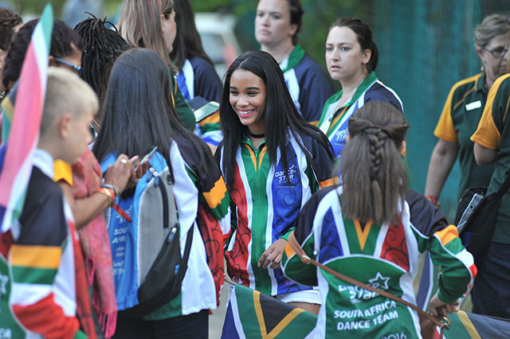

Welcome! Welcome! Welcome!

WORLD CHAMPION QUALIFIERS
Zumba's most well-known and popular program is its namesake class, Zumba. This dance class features high- and low-intensity intervals that help improve cardiovascular fitness while also enhancing balance, coordination, agility, and to some degree, strength, through the application of beginner-accessible choreography. You don't need any special dance skills to succeed in Zumba classes but those that have natural rhythm may pick up on the moves faster. Still, no one is keeping score, so just dance, let go, and have fun. Classes typically consist of a series of Latin-inspired songs, starting with a slower warm-up song, building intensity throughout the workout, and ending with a cool-down song. Even if you're not a strong dancer, the choreography is repetitive and designed to be built upon, so most people will catch on to the moves as they go. In fact, a big draw of Zumba is that just about anyone can do it, and regardless of how quickly you pick up on the choreography, you're likely to be having fun—and sweating. No special equipment or outfits are needed either. All you need is a positive attitude and to keep moving along with each song. Zumba was officially founded in the United States in 2001 by Alberto "Beto" Perez, a Colombian dancer who started the fitness class in the '90s in his home country. Perez's "rags to riches" story could be considered serendipity—he was teaching an aerobics class at his local gym when he realized he'd forgotten his usual music. Without time to retrieve his tunes, Perez ended up using a few of his favorite Latin-dance cassettes, and just like that, the new class was born. It became so popular with people in Columbia, that popstar Shakira enlisted him to help choreograph some of her music. In 2000, Perez decided to launch his fitness class in the United States. In 2001, he partnered with two investors and released a series of three Zumba DVDs available through an infomercial. While the class wasn't an overnight success, it gained significant steam, and by 2012 received further investment and expansion with more class formats, Zumba cruises, Zumba vacations, and an extensive instructor training program. The dance fitness concept wasn't new when Zumba rose to fame, but the high energy fun of its classes was. Plus, Zumba's timing was ideal. In the early 2000s, large fitness centers, like 24 Hour Fitness and Lifetime Fitness were popping up everywhere, often including group fitness classes as a benefit of membership. These gyms were looking for unique classes to add to the draw of their lubs. At the same time, there was a growing focus on the concept of "fitness as fun" to keep members engaged and interested. Zumba effectively delivered on those needs and was overwhelmingly picked up as a regular class offering across the country. As Zumba grew in popularity, it often became a driving force of gym membership and membership retention, making it a win-win for all involved.
When hip hop music first developed in the late 1970s, not many people knew about it. It was created in the poorest districts of New York City by African American and Latino teenagers as part of a hip hop scene that also produced breakdancing and graffiti art. Many of these young people were unemployed, but some found work as DJs in discos where they learned deejaying techniques like how to use two turntables and a DJ mixer to play records non-stop. Sometimes they'd also deejay at free block parties in their neighbourhoods where they'd play funk and disco tracks non-stop and ask a friend to act as their MC. The MC would introduce the DJ and encourage everyone to dance and have a good time. Some MCs tried to be more entertaining by talking in time to the beat of the music and using rhymes, and by doing this they invented rapping. As rapping became more popular, more DJ and MC duos formed. As the competition grew, DJs began improving their beats by using techniques like sampling short drum breaks and scratching. MCs also began improving their raps by using more complex rhymes and by developing flow, or the ability to rap with a good sense of rhythm and a natural flowing style. Hip hop music was only performed live at first, but in 1979 a hip hop single called Rapper's Delight by The Sugarhill Gang was released, and to everyone's surprise it became a top-ten hit worldwide. After the success of Rapper's Delight, many other hip hop records were released like Kurtis Blow's The Breaks and Afrika Bambaataa's Planet Rock. Most of these songs were about having fun, but in 1982 Grandmaster Flash and the Furious Five released The Message, an early example of socially-conscious hip hop. It had a slow funk groove with melodic synthesizer riffs and the raps were about social issues like poverty, crime and the stress of living in a dangerous city.
“Dancing with the Stars” is never just about the dances. While the contestants are judged and scored by a panel of experts based on the quality of their routines, half of the results are determined by viewers voting from home. So who stays and who goes can be quite surprising. Scroll down for the complete “Dancing with the Stars” results for season 30, updated every week as celebs are sent home. SEE‘Dancing with the Stars’: Meet the Season 30 cast Season 30 assembled 15 celebrities from the worlds of movies, TV, music, sports, and social media. They included country singer Jimmie Allen; Spice Girls singer Melanie C; “Bling Empire” star Christine Chiu; “90210” actor Brian Austin Green; “The Office” actress Melora Hardin; social media personality Olivia Jade; “Bachelor” star Matt James; “The Talk” co-host Amanda Kloots; “Cobra Kai” actor Martin Kove; Olympic gymnast Suni Lee; WWE wrestler Mike “The Miz” Mizanin; “Real Housewives” alum Kenya Moore; Peloton fitness instructor Cody Rigsby; basketball player Iman Shumpert; and singer and YouTube star JoJo Siwa. The judging panel consists of “DWTS” mainstays Carrie Ann Inaba, Len Goodman, and Bruno Tonioli. Derek Hough, who filled in for Goodman in season 30 when Goodman was unable to travel to the US due to the COVID-19 pandemic, is sticking around as full-time fourth judge this year. Their scores are combined with viewer votes to determine the bottom two each week, after which the judges decide which celeb stays and which goes home. So did we end up getting some shocking eliminations like Heather Morris and James Van Der Beek in recent seasons? Was there a head-scratcher of a winner like Bobby Bones? Follow along throughout the season to find out.